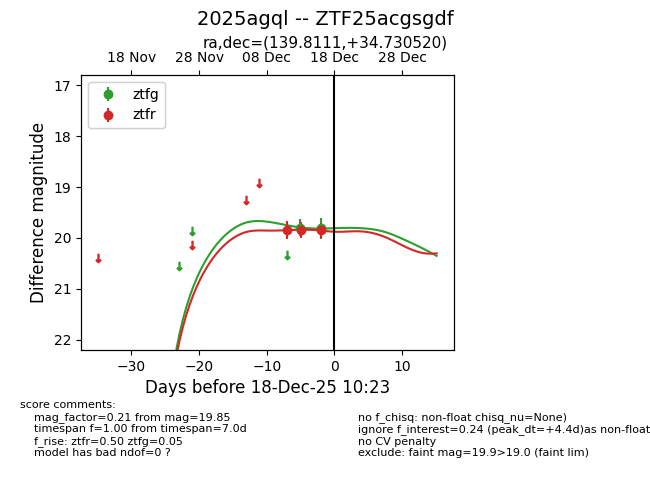
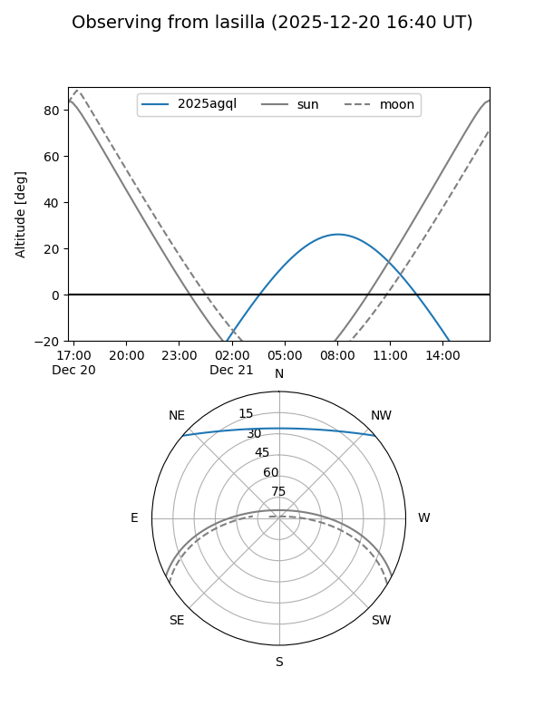
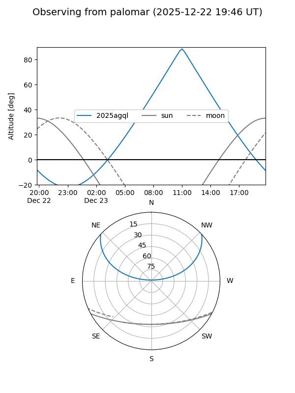
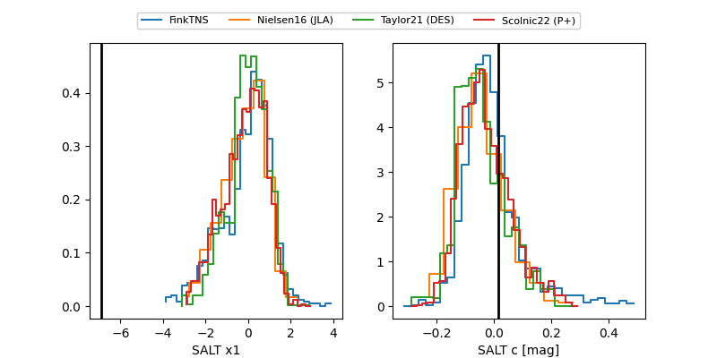

2025agql
Target 2025agql at 2025-12-22 18:06
Aliases and brokers:
FINK: fink-portal.org/ZTF25acgsgdf
Lasair: lasair-ztf.lsst.ac.uk/objects/ZTF25acgsgdf
ALeRCE: alerce.online/object/ZTF25acgsgdf
TNS: wis-tns.org/object/2025agql
YSE: ziggy.ucolick.org/yse/transient_detail/2025agql
alt names
ZTF25acgsgdf (ztf,fink_ztf)
2025agql (tns,yse)
Coordinates:
equatorial (ra, dec) = 139.8111,+34.73052
equatorial (HMS+DMS) = 09:19:14.65,+34:43:49.87
galactic (l, b) = (189.7116,+44.38472)
Flags:
Photometry:
last ztfg=20.10, ztfr=20.02
4 ztfg, 5 ztfr detections
Lightcurve

Visibility


Additional plots
